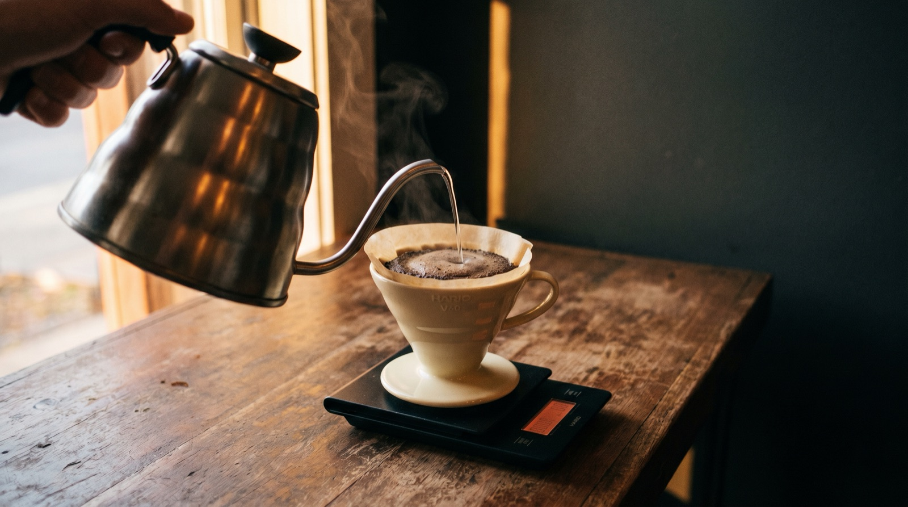
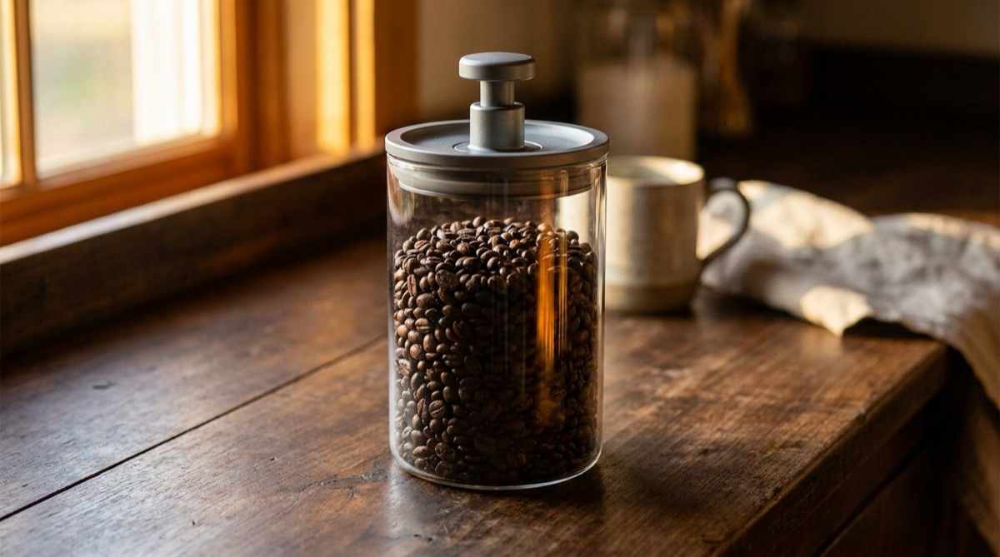
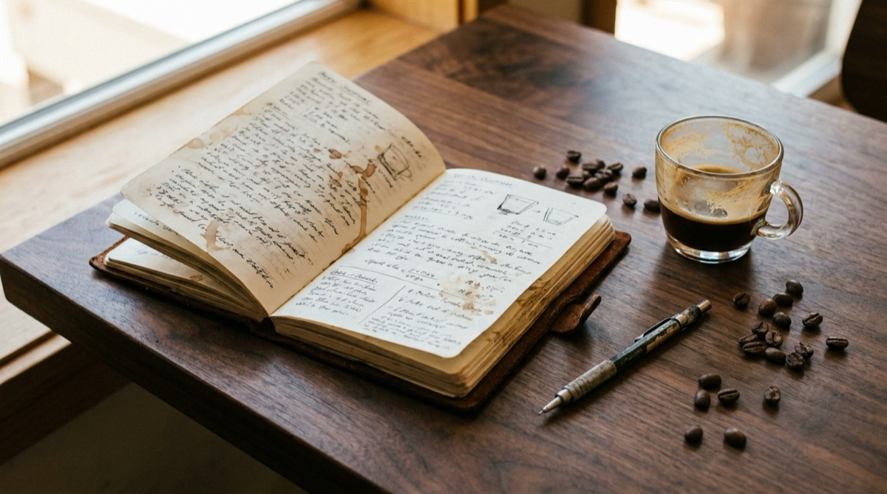

10 ways to ruin a great coffee (and how to avoid them).

There are four main stages at which we can royally mess up a great coffee.
The first happens at the farm. The coffee can be harvested at the wrong time — beans unripe — or processed and dried incorrectly, which can, among other things, make decent roasting nearly impossible.
The second happens during transit. From origin, to the roaster or middle man. Incorrect storage during coffee's often-long transit can wreak havoc.
Stage three is at the roastery. Coffee can very easily be stored in poor conditions here too, or over- or under-roasted and not fully developed. Either can destroy everything that was done right before it arrived.
The fourth and final stage begins once the coffee gets into the hands of whoever is brewing it. A lot, a lot, A LOT, can go wrong at this stage. From storage, to flavour contamination, to incorrect brewing — even if everything was done perfectly on the farmer's end, and the roaster roasted it nicely, this last stage can discount everything.
The first three stages are out of your control as a home brewer. The fourth isn't — and that's what this post is about.
Here are ten common mess-ups I'm sure we've all been guilty of in our newbie days. I've made the mistakes so you don't have to. You're very welcome.
Why stage four is where most of us ruin it
The uncomfortable truth: you can buy the most beautifully sourced, perfectly roasted bag of coffee in the world, and undo all of it in under 60 seconds of bad technique at home. The good news is that every single one of those mistakes is fixable with no more than $30 and a little attention.
Let's go.
1. Not keeping your coffee in a sealed container
When left exposed to air, oxygen can wreak absolute chaos on coffee beans. Oxygen causes things to go stale. Stale coffee = flat, boring-tasting coffee.
Keeping your coffee in a sealed container or bag is an effective way of slowing oxidation. Even better than a sealed airtight container is a vacuum-sealed one — vacuum seals actually pull the air out, so your coffee keeps far longer.
A number of companies make vacuum-seal containers where you pump the air out by hand. Traditional vacuum-sealed bags also work a treat.
If you'll finish the bag within a week of opening, the bag the coffee came in will absolutely do the trick. Much longer than a week, and I'd strongly recommend a vacuum-sealed container of some sort. For a full breakdown of the freshness timeline, our bean freshness guide covers it in detail.

2. Using a filter that tastes of paper
I'm thinking most coffee enthusiasts have done this. Possibly while bored.
What you do is buy a few different brands of coffee filters — whatever you have available. Place one of each filter in its own cup, then pour hot water over it. Just like brewing a delicious cup of coffee-paper-filter tea. Let it cool, then taste the water.
Which water has the least taste? That's the filter you should go with.
The reason: we don't want any outside flavours affecting the coffee. By using the filter whose flavour we can detect the least, we're mitigating the chance of a papery note obstructing the flavour of the coffee itself.
Also, no matter which filter you land on — pre-rinse it with hot water before every brew. That gets rid of any residual papery taste and (bonus) preheats your brewer. Which is a convenient segue to a later point.
3. Pre-ground coffee, or grinding with a blade grinder
This again comes down to our love-hate relationship with our good friend, oxygen.
When you pre-grind coffee, you're breaking open the bean — making much more surface area for oxygen to get in there and attack. Also, when grinding, you're releasing many aromatic compounds, which will be lost to the ether if you grind too far in advance. Best to grind a few minutes before brewing to get the most — all the delicious, delicate aromas — out of the coffee.
Not only is it best to grind fresh, it's also important to use a good quality grinder. The rule here should be: buy the best grinder you can afford. Even a modest burr grinder is better than buying pre-ground bags.
I'll always recommend hand grinders — you get far more bang for your buck. A burr grinder with steel burrs, in my opinion, is the way to go. These give an even particle size (meaning all the little pieces of ground coffee are as close to the same size as possible, which is key to brewing evenly extracted coffee) and will last almost forever.
If you want a reference for your specific grinder, our grinder settings guide walks through how to calibrate any grinder to its native scale.
4. Using dirty brewing equipment
Stale, caked-on coffee tastes bad, bad, bad.
If you brew with a V60, Kalita Wave, or something similar, be sure to wash it — and the carafe you brewed into — afterward. Properly wash the cups you drink from. Rinse everything out after washing, because dish soap residue can give coffee a strange sunflower-kind-of-taste. Not nice.
Use a clean paint brush to brush out your grinder often, especially between different coffees. You don't want the taste of one coffee contaminating another.
Water contains calcium and magnesium. When heated, these break down and form what's known as scale, or limescale. If you're using a batch brewer or espresso machine, you'll need to descale your machine occasionally. It's pretty easy to do, with a descaling solution. (Apparently vinegar can be used, but I can't comment on that as I've never done it.) It's also worth descaling your kettle while you're at it.
Last but not least, rinse everything your coffee will come into contact with — aside from your grinder, please don't rinse your grinder — with hot water immediately before brewing. This will not only get rid of any dust, dead insects (just me?), and possible leftover dish soap; it'll also preheat your equipment.
Well, well. That was a convenient segue.
5. Not preheating your brewing equipment
Coffee extracts most effectively at high temperatures — around 95°C. Preheating helps keep things hot.
Brewing into a cold, non-preheated V60 or alike can cause the slurry temperature to drop. Lower slurry temperature equals lower levels of extraction. Lower extraction generally means less flavour. So keep it hot.
The equipment you should be preheating:
- V60, Kalita Wave, or whatever brewer you're using
- Filter paper (also flushes out any papery taste)
- Carafe you're brewing into
- Cups you'll be pouring into
- Pour-over kettle (if you don't use it to actually heat the water)
6. Brewing coffee outside its golden flavour window
Some coffees peak, flavour-wise, at two weeks post-roast. Most coffees are at their best between one and two weeks. I personally find the 10-day mark to be spot on.
Before day 5, the coffee is still degassing — CO₂ released during roasting can make for uneven extraction and a slightly meaty, bitter cup. After about two months, oxidation has noticeably flattened the flavour. Somewhere in the middle is the sweet spot.
Our coffee bean freshness guide goes deeper on the science — degassing curve, the freezer question, and why some varieties (like Laurina) peak later around one month.
7. Using bad (or unfiltered) water
A cup of filter coffee is made of somewhere in the realm of 98% water — making water its main, yet often most overlooked, ingredient. There is likely no bigger change you can make in your brewing game that will more positively affect your cups than looking closely at the water you're using.
Ideal coffee brewing water, in short, is clean and pH-neutral, with no odour or obvious taste.
There are a few water-purifying jugs out there. Maxwell Colonna-Dashwood of Colonna Coffee developed the first gravity-fed water-purifying jug, specifically designed to optimise water for coffee brewing — the Peak. Worth keeping an eye out for one of those.
There are loads of other water purification options out there. A Brita or something similar will do the trick just fine for most homes. I'm certain that if you make the switch from unfiltered tap water, you'll notice a huge difference.
A common mistake to avoid: distilled or heavily softened water. It lacks the mineral content needed for proper extraction, and tends to produce a hollow, flat cup. Filtered is the target, not stripped.
8. Not actually learning to brew
With the combined powers of coffee professionals across Instagram and YouTube, there has been no better time in history to learn how to brew delicious coffee. What was once available only to people who worked as baristas, or paid for a brewing course, is now free and in abundance. Regardless of the brewer you have or style you dig, there will be a ton of tutorial videos and tips on how to brew using what you've got.
A few of my favourites: James Hoffmann's V60 tutorial, Tetsu Kasuya's 4:6 method tutorial, and Tim Wendelboe's espresso video. Go on a YouTube journey, you'll find hundreds of useful videos.
If you want a recipe you can actually work from, we wrote a full V60 guide covering ratios, timing, and why your pour technique matters more than your filter choice. For espresso, how to dial in your espresso walks through the same for the pressure side.
9. Brewing without a scale and timer
It's relatively easy to brew a good cup of coffee, one time. It's very difficult, however, to brew that same coffee, tasting good, time and time again.
The only way to brew repeatable, delicious coffee, every time is with scales and a timer.
We use scales to weigh our dry coffee dose, and to measure our brew weight as we pour. We do this in order to follow a brew recipe. A brew recipe will look something like this:
- 0:00 — Pour 50g of water, wait 45 seconds (bloom)
- 0:45–1:10 — Pour water until scale reads 150g
- 1:15 — Swirl coffee slurry
- 1:20–2:00 — Continue pouring slowly in the centre until 250g target weight
- Drawdown should be complete between 2:30 and 3:00
Try and do THAT without a scale or timer. Not a chance.
Any timer will do the trick — just the stopwatch on your phone is good. You'll ideally need a scale that's reasonably fast and accurate to 0.1 of a gram. There are plenty of scales made specifically for brewing coffee, in vast varieties of shapes, sizes, features, and prices. The Hario V60 drip scale is on the low end; Acaia scales are the current industry standard. (We wrote a full guide to using Acaia for espresso if you're going that route.)
Keep a brew journal
This follows on from the previous point about repeatability.
Keeping tasting and brewing notes, or a brew journal, is a good way of reliably repeating a good brew. Write your recipe and method down in as much detail as you can — from the speed at which you poured, to whether you stirred or swirled the slurry.
It's a good way of not making the same mistake twice, while continually improving your brews and keeping a nice little memo of all the delicious coffee you've had over the years.
It can be as simple or as complex as you like. At a minimum, I'd include:
- Details of the coffee you're using
- Grind size (as shown on your grinder)
- Brewing device used
- Amount of dry coffee used
- Amount of water
- Method
- Tasting notes
- Notes on how you might brew it better next time
This is literally what the app is for.
Extraction is a native brew journal for your phone. Logs every brew, every bean, every tasting note. Weekly AI insights tell you what actually moves the needle on your cups. Free trial.
Download on the App Store
10. Drinking coffee when it's too hot
As I flip through my brew journal (see — I told you), I often note that my brews taste best at around 50°C, with 60°C displaying the most perceivable aromatics. I know this because, on days when I feel particularly geeky, I sit with my coffee and measure the temperature every time I sip or smell it. I note my findings in my brew journal.
See what works best for you. If a coffee tastes a little flat and boring a couple of minutes off-brew, wait 5 or 10 minutes. Give it time. As it cools, it may open up with big fruity or floral characteristics, increased acidity, and just a whole lot more flavour in general.
This is far from an exhaustive list — I'm sure there are a thousand more ways to ruin a good coffee — but this is a good start. Enjoy the learning process coffee presents, and don't be afraid of a mess-up. It's going to happen now and again. Never don't try something new.
See what works for you. This is what works for me.
You're very welcome.
Frequently asked questions
Whole beans, sealed airtight container, out of light and heat. Vacuum-sealed is better still. If you'll finish the bag within a week of opening, the original bag is fine.
Grinding exposes huge surface area to oxygen and releases aromatic compounds that dissipate quickly. Pre-ground coffee tastes noticeably flatter and less aromatic — grind fresh, every time.
Clean, pH-neutral water with no odour or obvious taste. A Brita-style filter pitcher fixes most tap water. Avoid distilled or heavily softened water — it lacks minerals needed for proper extraction.
Most aromatics are perceivable around 60°C, and cups usually taste best around 50°C. Many brews open up dramatically after 5–10 minutes of cooling.
Coffee extracts best around 95°C. Cold equipment drops the slurry temperature immediately, reducing extraction. Preheat brewer, filter, carafe, and cup.
5 to 15 days post-roast for most coffees. Before 5 days, the coffee is still degassing. After two months, oxidation flattens the flavour.